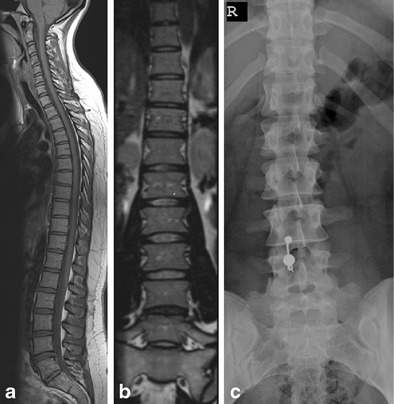
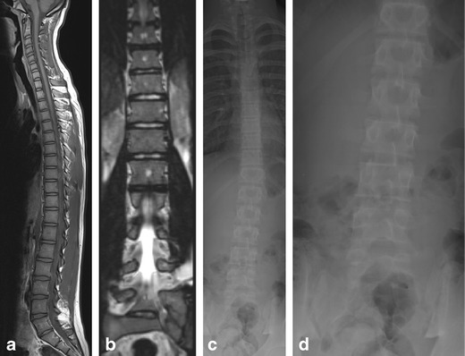
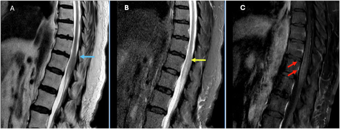
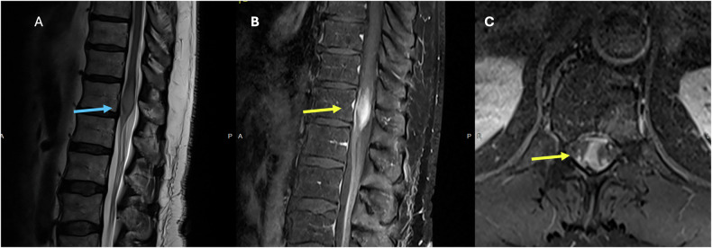
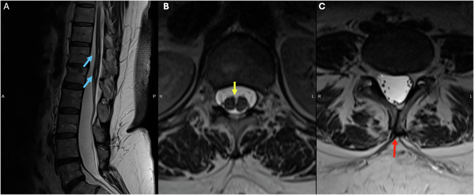

Two questions to settle before you grade anything — where the cord ends, and whether you are counting the right level.
Companion to Parts 1–3.
1Why this part is last, and why it happens first
Everything in Parts 1 to 3 assumed two things without saying so: that the spinal cord ends where
you expect, and that the level you are naming is the level you are looking at. Both assumptions fail often
enough to check every time, and both fail silently.
These are quick checks — seconds each, at the start of the study, before any grading. They are last in
the series because they only make sense once you know what you are grading, and first in practice because
everything downstream depends on them.
Two questions, in this order.
1 · Where does the cord end? If it ends low, you are no longer reading a degenerative study.
2 · Am I counting the right level? If the anatomy is transitional, every level name below it is
provisional until you say what you counted from.
2Checkpoint one — where does the cord end?
Step 1 of the lumbar read. Find the tip of the conus on the mid-line sagittal before you look
at a single disc.
Note how wide the normal range is. Nearly one person in five has a conus ending below the
L1–L2 interspace and is completely normal. A conus at L2 is not tethering. The threshold that matters is
lower and much rarer: at or below the L2–L3 interspace, which was 0.7% of 944 adults.
Why an APP should care, in one sentence. A low conus points at tethered cord — a different
disease, a different operation, and a different specialist. It also changes where a spinal anaesthetic can
safely be placed, which is the reason this dataset exists in the first place.
3Checkpoint two — are you counting the right level?
This is the least glamorous thing in the whole series and probably the most consequential.
Numbering is an assumption, and it is wrong often enough to check.

Tins & Balain, Insights Imaging 2016;7:199–203, Fig 1 CC BY 4.0
Sacralised L5 — the lowest disc is not L5–S1
Whole-spine sagittal, panel (a)
The lowest lumbar segment has partly fused to the sacrum. If you count upward from “the lowest
mobile disc”, you will name every level one lower than it is.
Notice what panel (a) is: a whole-spine sagittal. This is why counting needs a long sequence or a
localiser that reaches a fixed landmark. On a lumbar-only study there may be nothing reliable to count
from.

Tins & Balain, Insights Imaging 2016;7:199–203, Fig 2 CC BY 4.0
Lumbarised S1 — there is an extra level
Whole-spine sagittal, panel (a)
The opposite error. The top sacral segment has separated and behaves like a sixth lumbar vertebra, giving
an extra mobile disc below L5. Count from below here and every level comes out one too high.
The two variants push the count in opposite directions, which is exactly why “count from the
bottom” is not a method. Say what you counted from.
4Checkpoint three — is the conus itself the problem?
Parts 1 to 3 were about things pressing on neural tissue from outside. Occasionally the tissue
itself is the lesion, and it sits exactly where a routine lumbar study starts.
The presentation that should stop you. Saddle anaesthesia, new retention, bilateral leg symptoms
— the picture everyone is trained to call cauda equina — can also be produced by a lesion
in the conus itself. The symptoms are similar; the cause is not degenerative; the workup is different.
If the discs look unimpressive against the symptoms, look hard at the conus before you accept the study
as negative.

Sagittal T2, STIR, and post-contrast T1. Insights Imaging 2025;16:2117, Fig 9 CC BY 4.0
Cauda equina symptoms, conus cause
Sagittal T2 first — then look again with fresh eyes
This man presented with saddle anaesthesia and incontinence. The T2 shows only mild
expansion of the conus and the STIR change is described as subtle. It is the contrast study that
makes it obvious.
What to take from this. The finding that explained everything was easy to miss on the sequences a
routine lumbar study actually contains. You are not expected to make this diagnosis. You are expected to
notice that the discs do not explain the patient, and to say so.

Insights Imaging 2025;16:2117, Fig 4 CC BY 4.0
When it is not subtle
Sagittal T2 · low back pain, numbness and weakness
The same region, and here the cord is frankly expanded with bright signal inside it. Note the
presenting complaint: low back pain with leg symptoms — indistinguishable, on the referral, from any
degenerative study you will read this week.
Expansion
The cord is fatter than the segment above. Compression makes cord thinner,
never fatter. Expansion is always a defer.
Signal inside
Bright T2 within the conus, not around it.
The single rule: a cord that is bigger than it should be is never degenerative.

Insights Imaging 2025;16:2117, Fig 12 CC BY 4.0
Congenital findings hide in ordinary studies
A routine lumbar MRI for back pain
A 47-year-old scanned for back pain, with three congenital findings: a small syrinx at
T12–L1, a duplicated dural sac split by a midline bony spur, and incomplete fusion of the posterior
elements of L5.
None of these is what the scan was ordered for. All of them change the anatomy an operation would
encounter, and the split dural sac belongs in the same family as the low conus in checkpoint one.
Why it belongs in this part: these are the findings that are missed precisely because the reader
already decided what study they were looking at. The checkpoints exist to interrupt that.
5What you can and cannot call
Call it and act on it
Defer it, always
The level at which the conus ends
Why a conus is expanded or enhancing
That the conus is or is not below the L2–L3 interspace
Any intramedullary lesion, of any kind
That the segmentation is transitional, and what you counted from
Which numbering convention the surgeon should adopt
That the cord looks expanded rather than compressed
Tumour versus inflammation versus infarct
That the degenerative findings do not explain the symptoms
What the alternative diagnosis is
The sentence to write."Counting from the last rib-bearing vertebra, this is a transitional
segment with a sacralised L5; levels are named accordingly. Conus terminates at the lower third of L1.
No cord expansion or intramedullary signal change." Two sentences, and the next reader knows exactly
what you assumed.
Where the series ends. Across four parts the recurring point has not been any grading system — it
is that your read exists to raise a question, never to close one. Schizas grades, Pfirrmann grades and
Lee grades all describe pictures. The checkpoints in this part describe whether the picture is the one you
think you are looking at.
6Where this stops being a teaching point
The counting problem in §3 is not only a reading problem. It is also the reason a whole
class of spine AI quietly fails.
A segmentation model trained on ordinary spines learns that the vertebra above the sacrum is L5. Show it a
sacralised L5 and it will confidently label the level below as S1 when the surgeon calls it L5 — or
show it a lumbarised S1 and every label above shifts by one. The model is not uncertain. It is wrong, and
it is wrong in exactly the same direction a hurried human is wrong, so a second reader agreeing with it proves
nothing.
That failure mode is invisible unless a dataset contains transitional anatomy and labels it as such.
Most public spine datasets do not: transitional cases are uncommon enough that they get excluded during curation,
or included and mislabelled by the very convention that the variant breaks.
This is why CTSpinoPelvic1K exists.
It is the first CT segmentation dataset for the spine and pelvis built to be LSTV-aware —
transitional anatomy is deliberately represented and explicitly annotated rather than quietly dropped. The
clinical checkpoint you have just read and the labelling standard the dataset uses are the same idea, one
applied by a person and one by a model.
The education model that produced this series is described in Schehr A, Kim J, Schwing G,
OpenSpineConsortium: an open-source framework for medical student engagement in computational spine
imaging research, Cureus 2026;18(7):e112661
(doi:10.7759/cureus.112661).
Sources.
Paul JE, et al. Conus medullaris termination: assessing safety of spinal anaesthesia in the L2–L3
interspace. Acta Anaesthesiol Scand 2025;69(3):e14580. — 944 adults on MRI; conus at L1 in 51.1%,
at or above the L1–L2 interspace in 81.1%, at or below the L2–L3 interspace in 0.7%.
Tins BJ, Balain B. Incidence of numerical variants and transitional lumbosacral vertebrae on whole-spine
MRI. Insights Imaging 2016;7(2):199–203 CC BY 4.0 — 420 consecutive
whole-spine MRI studies; transitional lumbosacral vertebra in 3.3%, other numerical variants in 7.7%.
Lindley EM, Botolin S, Burger EL, Patel VV. Unusual spine anatomy contributing to wrong level spine surgery:
a case report and recommendations for decreasing the risk of preventable "never events". Patient Saf Surg
2011;5:33 CC BY 2.0 — the wrong-level case described in §3.
Pathology of the conus medullaris and cauda equina: beyond the usual suspects. Insights Imaging
2025;16:2117 CC BY 4.0 — source of the three conus cases in §4.
Every image on this page is openly licensed and clickable.